יומן פיתוח חי · מתרענן כל 30 שניות
מהמבוך הישן
להרפתקה באנגלית.
למשחק הנוכחי ←
רף ההשוואה: Monument Valley II לאיכות חזותית; משימות באנגלית עם תשובה נכונה וברורה; תפעול נוח במחשב ובנייד. התמונות המקוריות הן חומר להשוואה ואינן נכסים של המשחק.
עדכון · 28.10.2026 · ספר סיום וגודל משתנהמגיעים אל הספר, ולא רק עוברים לידו
משחק הניסיון גילה שהספר הישן צויר גבוה מעל אבן הסיום ולכן נראה כאילו אי אפשר להגיע אליו. כעת הספר המואר נמצא על אבן הסיום עצמה. אחרי ארבעת האתגרים צועדים אל הספר ומסיימים את הסבב; המטרה כתובה גם בלוח המשימה.
בהרפתקה החופשית גודל המבוך משתנה מדי שלושה סבבים: 11, 13 ו־15 תאים בכל ציר. יצירת המפות מגבילה מסלולים ארוכים במיוחד, אך משאירה דרכים צדדיות ודף סודי. בדיקות הכיסוי בדקו 128 מפות משתנות, ארבעה שערים שאי אפשר לעקוף, מעבר לסבב 1,001, ושכל תאי ההליכה והספר נכנסים לתצוגת משחק ניידת בגודל 390 על 500.
עדכון · 28.10.2026 · מסלולים אקראיים באמתמבוך חדש בכל סבב חופשי
בדיקת משחק גילתה שהסבבים הישנים שינו רק את חלקת הגן הקטנה ואת הכניסה למדרגות, בזמן שרוב המבנה נשאר קבוע. המסלול החופשי מייצר כעת את כל רשת שבילי ההליכה מחדש בכל סבב: הדרך אל הספר, הסתעפויות, מדרגות, אבני אתגר ודף סודי בשביל צדדי. מסלול הפרקים המקורי נשמר.
בדיקת 30 סבבים עוקבים עם אותו זרע מצאה 30 מפות שונות; בין כל שני סבבים השתנו לפחות 15 תאי מבוך במדגם הזה. נבדקו גם 128 מפות שבהן כל השערים מחייבים פתרון והיציאה נגישה, ושמירה וטעינה חוזרות לאותה מפה. המפה אקראית בתוך מערך כללים קבוע, ולכן תבניות חזותיות מסוימות עדיין חוזרות.
עדכון · 28.10.2026 · הרפתקה חופשיתסבבים אקראיים ללא סיום קבוע
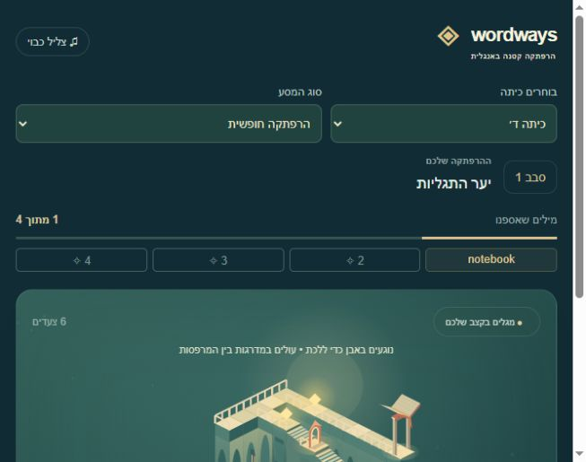
בוחרים ״הרפתקה חופשית״ תחת ״סוג המסע״. בכל סבב ארבע משימות באנגלית בהתאם לכיתה, עם תרגומים ועזרה בעברית. משתנים המסלול, ההסתעפויות, השאלות והסביבה. אחרי פתרון הסבב עוברים לסבב הבא ללא חזרה כפויה להתחלה.
מסלול הפרקים נשאר זמין וההתקדמות נשמרת בנפרד לכל כיתה ומצב. אותו סבב נטען עם אותן שאלות ומפה. התוכן מבוסס על תבניות ומילים שנבדקו; הוא משתלב לסבבים מתמשכים, אך מילים ותבניות יחזרו לאורך זמן.
בדיקות חדשות: 3,200 שאלות, 128 מפות עם יציאה נגישה ושערים שאי אפשר לעקוף, שונות אמיתית במסלולים, המשך עד סבב 1,001, שמירה וטעינה בלי לפגוע בפרקים. מבקר עצמאי בדק 800 סבבים; תיקוני תרגום ומגדר נבדקו שוב. המצלמה תוקנה למסכים נמוכים כדי שההוראות והדרך לא יחפפו.
לשחק ←
מצב נוכחי · 28.10.2026 · גרסה 13ניצחון ברוב קולות בהשוואה האנונימית
שניים מתוך שלושה מבקרי AI עצמאיים עם הקשר נקי העדיפו את הסצנה שלנו. המבקר השלישי והמבקר המלווה העדיפו את הרפרנס. זהו ניצחון ברוב, לא הכרעה פה אחד ולא טענה לשלמות.
48 משימות לכיתות ג׳–ו׳, עברית RTL, עזרה ותרגומים בעברית, תפעול בנייד ובמחשב ושמירה נפרדת לכל כיתה. כל חמש בדיקות המשחק עוברות. מבקר התוכן אינו מכיר פער נכונות שנותר.
לשחק ← · לתוצאות ההשוואה המלאות · לדו״חות המבקרים
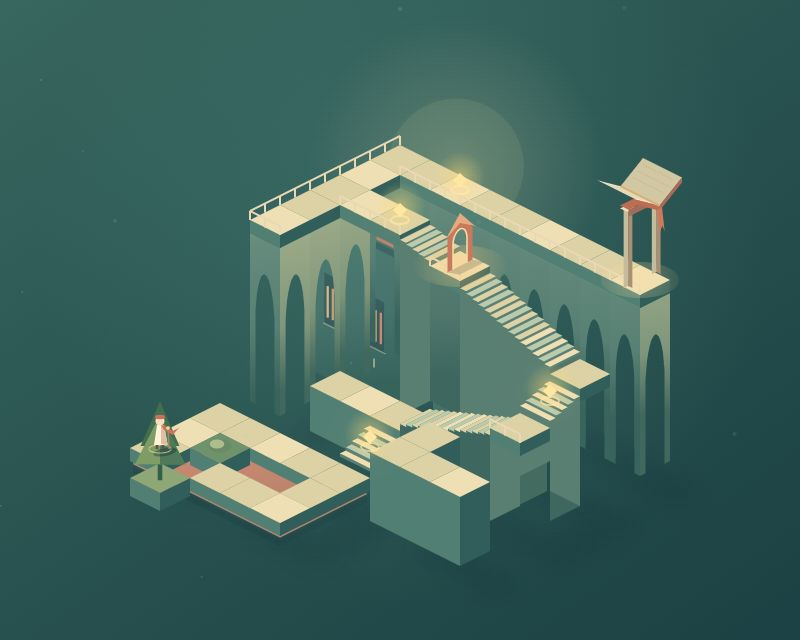
היסטוריית הבנייה והביקורת
סבב 1 · גרסה ראשונה וביקורתלחקור, לטעות וללמוד
נבנו מבוך איזומטרי, הליכה בלחיצה ובמקלדת, שערי למידה, שמירת התקדמות ושלושה פרקים. מבקר עצמאי בדק 12 שאלות באנגלית: התשובות נכונות, אך מיקומי התשובות חזרו בדפוס קבוע. תוקן באמצעות ערבוב אפשרויות.
בדיקת דפדפן: תשובה שגויה מציגה הסבר; תשובה נכונה פותחת את השער ומעדכנת התקדמות; טעינה מחדש שומרת משימות שהושלמו.
סבב 2 · שימוש בניידכפתורים שאפשר באמת ללחוץ עליהם
בבדיקה בגודל 390 × 844 לא הייתה גלילה לרוחב, אך המבוך היה קטן מדי. המבוך הוגדל ונוספו ארבעה כפתורי תנועה בגודל 48 פיקסלים. נבדק שוב בדפדפן.
סבב 3 · דרישות מעודכנות — בעבודהעברית, RTL וכיתות ג׳–ו׳
הממשק עובר לעברית ולכתיבה מימין לשמאל. משפטים באנגלית נשארים בכיוון הנכון. מתווספים בחירת כיתה, תוכן ברמות שונות, תרגומים והסברים בעברית. המשימות והיישום יעברו ביקורת נפרדת לאחר החיבור.
ביקורת חזותית עצמאיתהרף עדיין לא הושג
המבקר צפה במשחק האמיתי ובתמונות המקור: במשחק שלנו המבוך שטוח וקטן מדי והעצים חוזרים על עצמם. ברפרנס יש מבנים אנכיים, קשתות, מדרגות וצללית חזקה. הפער הוחזר לבונה לסבב נוסף.
אין עדיין הכרעה לטובת המשחק שלנו, ולא הוצהר על ניצחון בהשוואה עיוורת. בדיקת שמע בפועל עדיין לא הושלמה.
סבב 4 · בדיקות ותיקונים48 משימות, ארבע כיתות, עברית מלאה
נוספו 48 משימות לכיתות ג׳–ו׳, תרגומי משפטים והסברי דקדוק בעברית. רמזי שמיעה הופרדו מעזרה רגילה ומסומנים כתרגול בעזרת רמז. ההתקדמות נשמרת בנפרד לכל כיתה.
בדיקות לוגיקה עברו את כל 48 המשימות ו־12 סיומי הפרקים, ובדקו תשובות שגויות, שערים נפרדים ומשחק חוזר. בדיקה נוספת אישרה שמירה, טעינה ומעבר בין כיתות.
הבדיקות האוטומטיות משתמשות ב־DOM מדומה, ואינן מחליפות בדיקות דפדפן ושמיעה אנושית. בדיקות דפדפן אישרו את הממשק בנייד ואת התרגום העברי.
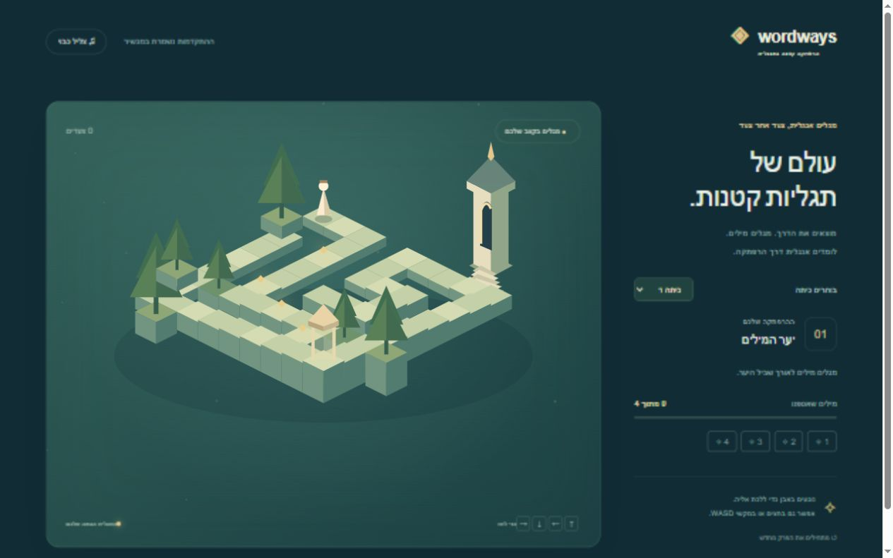
סבב 5 · ביקורת חזותיתיותר עומק וניגודיות
המבקר עדיין העדיף את הרפרנס בגלל מבנים שטוחים וצבעים חלשים. נוספו טרסות, מגדל גבוה, תנועת דמות חלקה, גג בגוון אלמוג, דפנות כהות, שערים זוהרים ודמות בולטת יותר. הפלט המעודכן נשלח לבדיקה נוספת.
פרסום פרטי ממתין לאישור לייצוא המקור והצלילים. המשחק פועל מקומית. אין עדיין טענה לניצחון חזותי או לשליטה לימודית.
סבב 6 · מדרגות וגשריםגובה שאפשר ללכת בו
נוספו שלוש טרסות, מדרגות וגשרים תלויים. בדיקות התקדמות, שמירה ורינדור עדיין עוברות. המבקר בדק צילומים אמיתיים במחשב ובנייד מול תמונת משחק רשמית: העומק השתפר, אבל המדרגות נראות לעיתים כמו קירות ועצים מסתירים צמתים. הפער חזר לבונה לשיפור הקריאות.
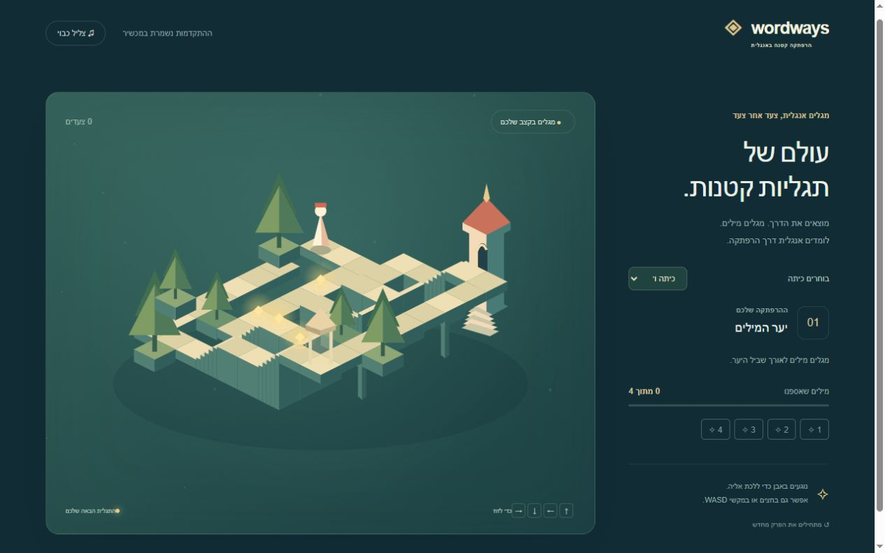
סבב 7 · בדיקה ותיקוןמדרגות ברורות, אותיות גדולות
המבקר העצמאי בדק את צילומי המחשב והנייד מול תמונת משחק רשמית. המדרגות כעת ברורות יותר, עצים כבר אינם מסתירים צמתים, וכפתורי התנועה מצביעים בכיוון האלכסוני הנכון. הרפרנס עדיין הועדף: התמיכות הדקות והשבילים החוזרים נראים כמו לוח ולא כמו מבנה שלם.
נוספו אותיות וכפתורים גדולים לילדים, טיפול בכשלי שמע ותיקון תקלה בדיאלוג הסיום. בדיקת רגרסיה אישרה שאי אפשר להיתקע בין פרקים.
דו״חות המבקרים
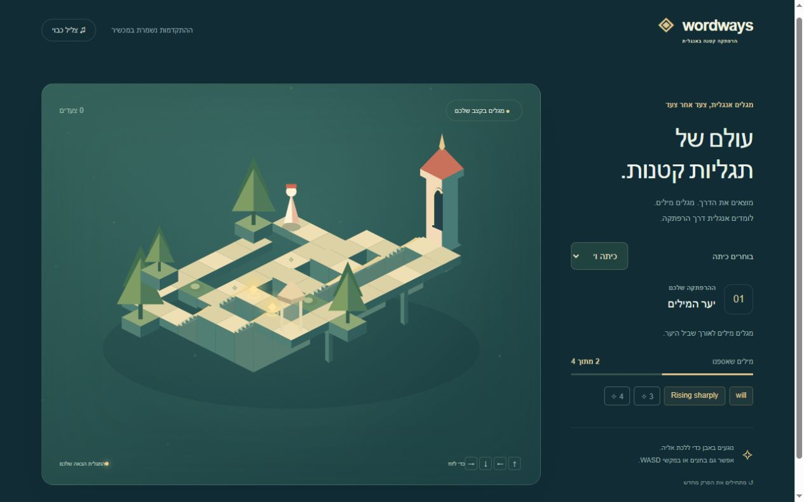
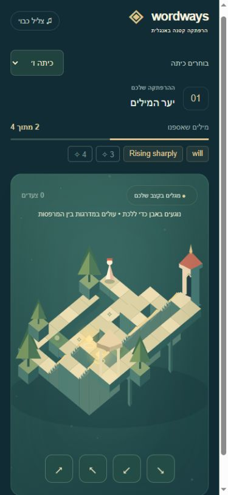
סבב 8 · בעבודהממבוך למקום שאפשר לדמיין
הבונה מטפל במבנה הגשרים, התמיכות והצללים כדי ליצור סביבה אדריכלית מגובשת. אין עדיין הכרעה לטובת הפלט החדש.
עדכון אחרון: 27.10.2026 · סבב 7 נבדק, סבב 8 בעבודה. הדף מתעדכן אוטומטית מדי 30 שניות.
סבב 8 · פלט חדש לבדיקהגשרים עם קשתות פתוחות
התמיכות הדקות הוחלפו בקשתות אבן, נוספו מעקות לשבילים הגבוהים וצללים כיווניים. הפלט המעודכן נשלח למבקר. המשתמש אישר פרסום פרטי; ההעלאה בהכנה.
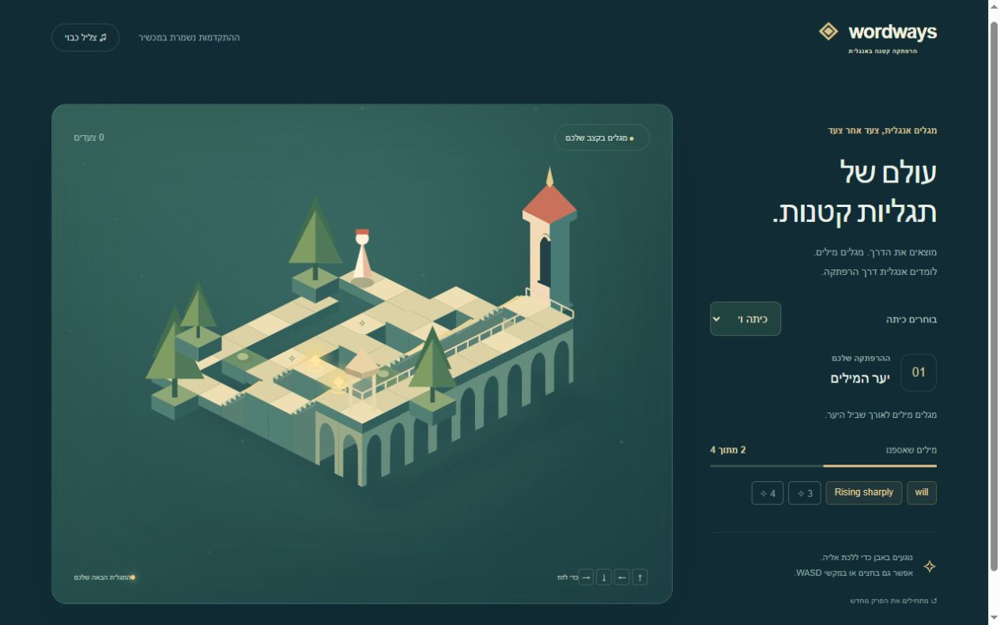
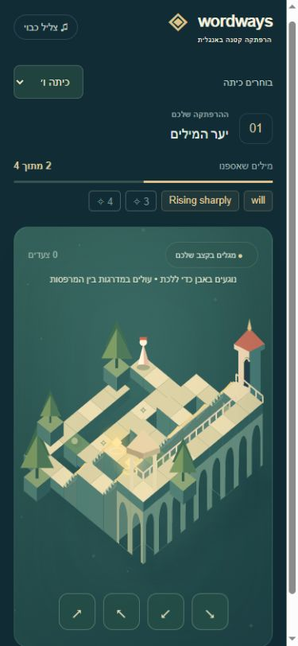
סבב 8 · הכרעת המבקרשיפור מבני משמעותי, הרפרנס עדיין עדיף
הקשתות והמעקות יוצרים כעת גשר אבן משכנע והדרך נותרה קריאה במחשב ובנייד. הפער הבא הוא הרכב השלב: נדרש מסע טיפוס בעל מבנים בגבהים שונים וצללית זכירה, מעבר להוספת פרטים. אין עדיין ניצחון מול הרפרנס.
פרסום פרטי הצליח · 27.10.2026אפשר לשחק גם ברשת
המשתמש אישר את הייצוא. גרסת סבב 8 פורסמה בפרטיות בהצלחה. ההרשאות נשארו פרטיות.
ניסוי השוואה עם תוויות A/B העדיף את הרפרנס, אבל חיתוך תמונות לא תקין הפך אותו ללא אמין להשוואת קומפוזיציה מלאה; הוא אינו משמש כהכרעת ניצחון או הפסד. ההשוואות הישירות המתועדות עדיין מעדיפות את הרפרנס.
סבב 9 בבנייה: מעבר למסע בין מבנים בגבהים שונים עם מדרגות וגשרים מחוברים.
סבב 9 · מסע טיפוס חדשמגן נמוך לגגות גבוהים
המבנה החדש כולל גן מסתעף, מגדל מדרגות, גג ספרייה וגשר סיום. חמש בדיקות עוברות, כולל מניעת עקיפת שערי למידה. המבקר ראה שיפור משמעותי במסע האנכי, אך מצא נסיגה בקומפוזיציה: חזית גדולה מסתירה את המפלס התחתון והדמות נראית על גג שאינו נקודת ההתחלה. בנייד הגג הגבוה חופף להוראה. סבב 10 מטפל בהפרדת נפחים ובמסגור.
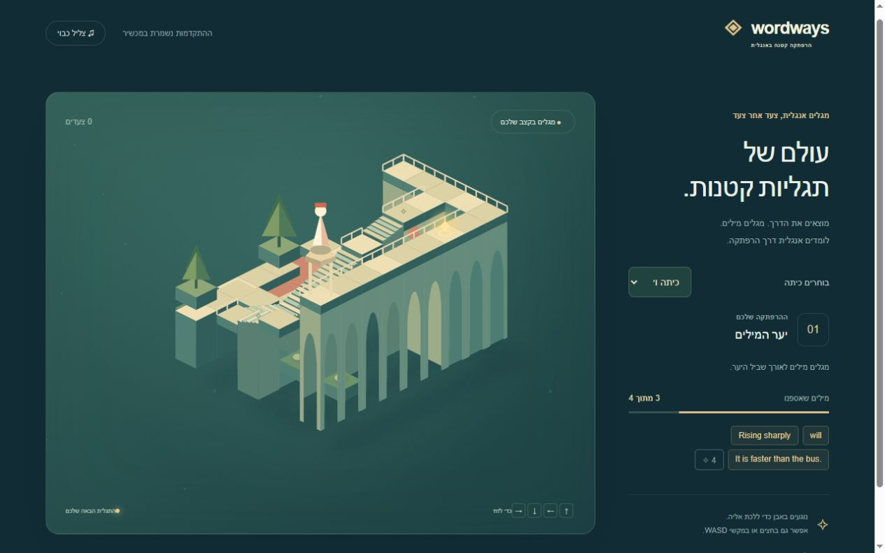
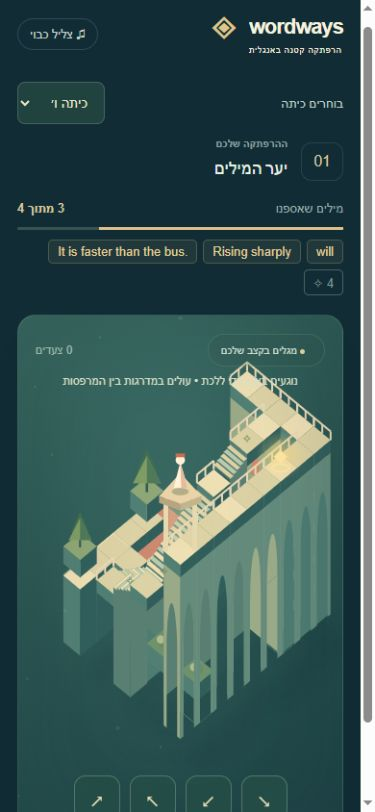
סבב 10 · 28.10.2026מסלול שאפשר לקרוא
המצלמה והמבנה סובבו יחד. הגן הנמוך כעת בחזית והספרייה מאחור; הגבהים בנייד מותאמים לגודל האבנים והכפתורים נראים בלי חפיפה. המבקר הגדיר זאת כגרסה החזקה ביותר עד כה: כל הטיפוס קריא, נקודת ההתחלה ברורה ואין חוסם קריאות בצילומים.
הרפרנס עדיין עדיף בתאורה ובשילוב הדמות בעולם. סבב 11 מטפל בדמות ובמוקד צבע ותאורה לאורך הדרך.
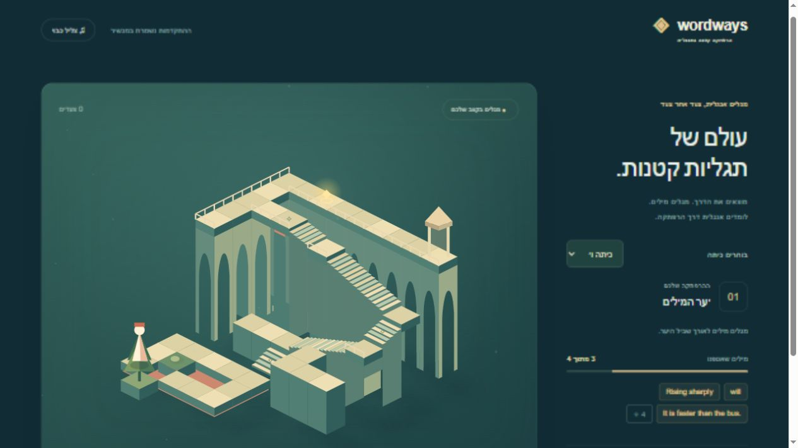
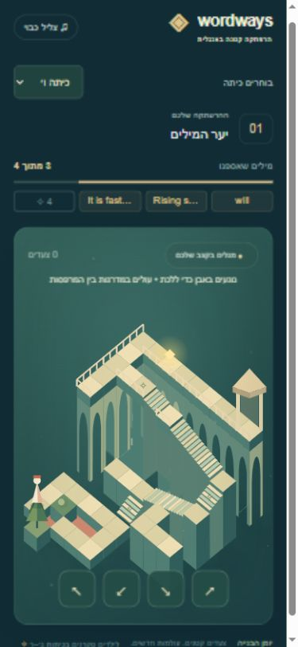
סבב 11 · דמות ומוקד בינייםמטייל קטן בעולם גדול
הדמות הוקטנה ונוספו רגליים, צעיף ומטה. פתח חם ומואר מסמן נחיתת ביניים. המבקר צפה בצילומי מחשב ונייד מול תמונת הרפרנס הרשמית המלאה: קנה המידה טוב יותר, היעד ברור והמסלול נשאר קריא. הרפרנס עדיין הועדף בעומק התאורה ובאווירה; סבב 12 מטפל בצללי מגע, גווני קירות וערפל בסיס עדין.
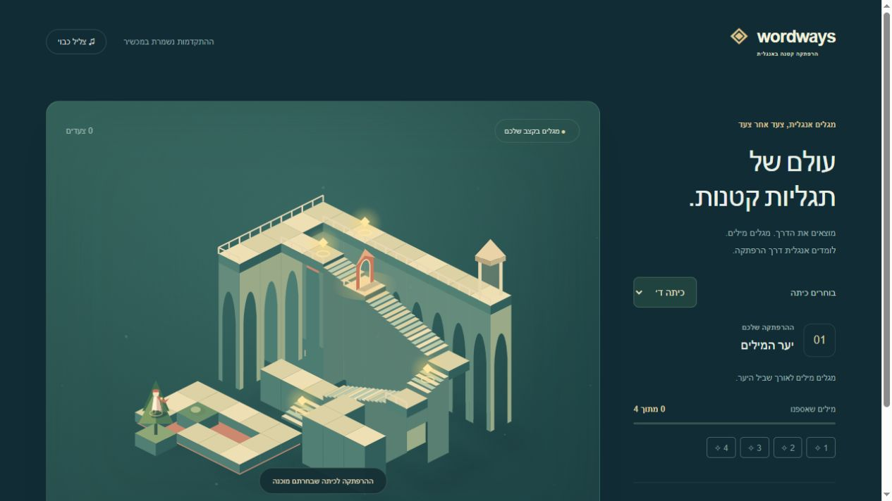
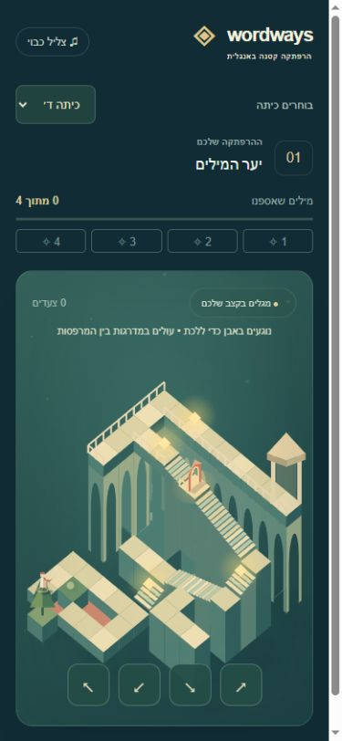
סבב 12 · תאורה ועומקקירות מוארים ובסיסים רכים
נוספו הצללה כיוונית, צללי מגע, גווני קירות המשתנים עם הגובה ואווירה מאחורי המבנה. המבקר אישר שיפור בעומק בלי לפגוע בקריאות. הרפרנס עדיין הועדף בזהות האדריכלית ובצללית; סבב 13 מוסיף יעד מקורי וזכיר בפסגה, כחלק מהמסלול.
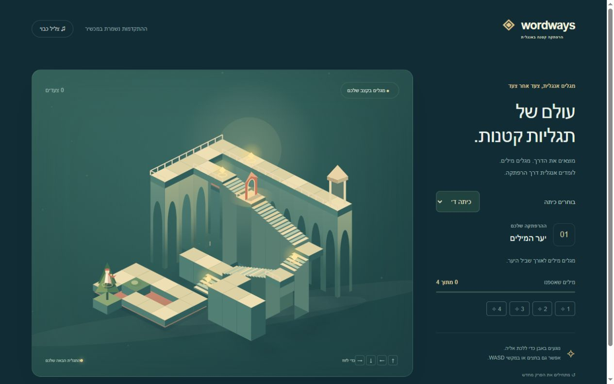
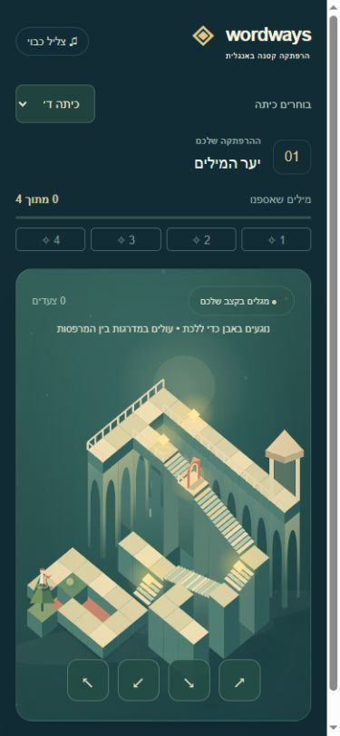
בדיקת דפדפן נוספת השלימה פרק מלא ועברה לטירת המשפטים. כל חמש בדיקות הלוגיקה עוברות.
סבב 13 · יעד מקורי והכרעת ההשוואהביתן ספר פתוח בפסגת המסלול
ביתן הקריאה מחובר לנחיתת הסיום, ולחזית הספרייה נוספו גומחות ספרים. בדיקות המחשב והנייד אישרו שהגג, ההוראות, המסלול וכפתורי התנועה אינם חופפים.
להשוואה האנונימית השתמשנו בתמונת המשחק הרשמית המלאה ובצילום נקי של מנוע המשחק שלנו ללא HUD. המבקרים קיבלו את הקבצים K ו־M בלי מקור או תוצאה רצויה: K הוא הפלט שלנו, M הוא הרפרנס. מבקר 1 העדיף K בביטחון בינוני, כ־70%; מבקר 2 העדיף K בכ־75%; מבקר 3 העדיף M בכ־80%. לא נוספו שופטים לאחר קבלת תוצאות הפאנל.
העדפות לפלט שלנו: קומפוזיציה, הפרדת משטחי הליכה, קריאות הדרך ושילוב הדמות. העדפות לרפרנס: זהות אדריכלית, צללית עשירה ועומק סביבתי. המבקר המלווה, שהכיר את המקור, ממשיך להעדיף את הרפרנס.
מגבלות: K צולם ב־800 × 640, M הוא 1280 × 720; יחס התמונה והמסגור שונים. אלו העדפות של מבקרי AI על תמונות סטטיות, ואינן מדידת אנימציה, למידה או שימוש בטלפון פיזי. בדיקות דפדפן נפרדות בדקו תנועה, טעינה, תרגומים, שגיאות, פתרון שערים ומעבר פרק. השמע הופעל אך לא אומתה איכות ההקראה בהאזנה אנושית.
התוכן הוא תרגול התחלתי, לא תוכנית לימודים מלאה. שמירת ההתקדמות מקומית למכשיר.
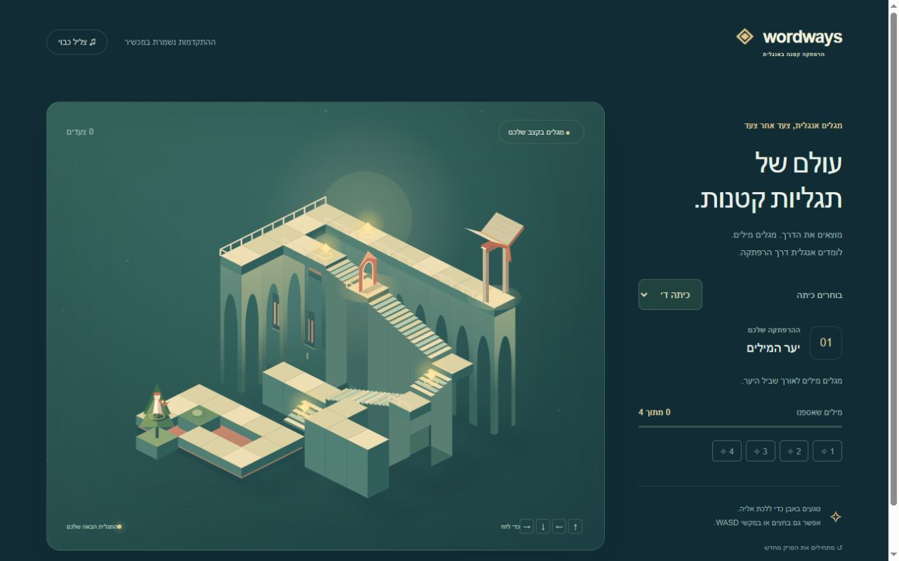